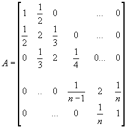
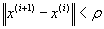
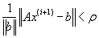

1. Dany jest uk³ad równañ liniowych Ax=b.
Macierz A o wymiarze nxn jest okre¶lona wzorem:

Przyjmij wektor x jako dowoln± n-elementow± permutacjê ze zbioru { -1, 0 } i oblicz wektor b (operuj±c na warto¶ciach wymiernych).
Metod± Jacobiego oraz metod± Czebyszewa rozwi±¿ uk³ad równañ liniowych Ax=b (przyjmuj±c jako niewiadom± wektor x).
W obu przypadkach oszacuj liczbê iteracji przyjmuj±c test stopu:


10x1 - x2 + 2x3 – 3x4
= 0
x1 + 10x2
- x3 + 2x4 = 5
2x1 + 3x2 + 20x3 - x4
= -10
3x1+ 2x2 + x3 + 20x4
= 15
jest zbie¿ny. Ile iteracji nale¿y wykonaæ, ¿eby znale¼æ pierwiastki uk³adu z dok³adno¶ci± do 10-3 ?